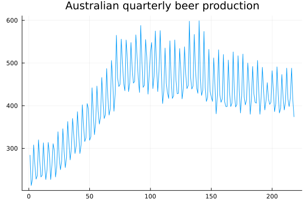
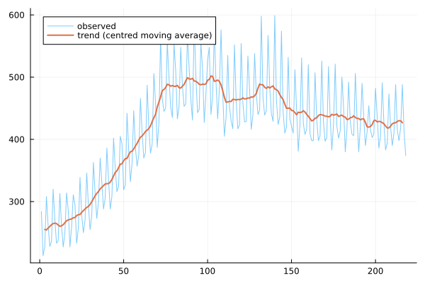
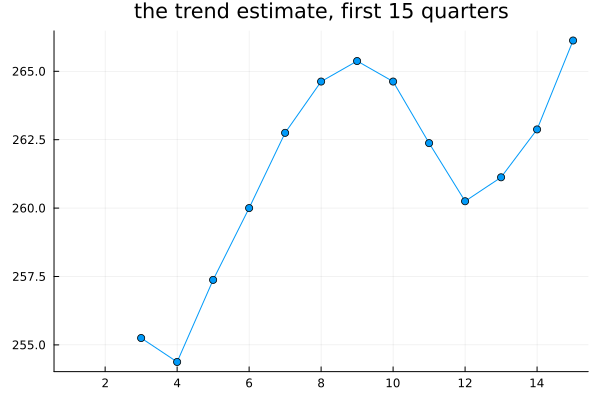
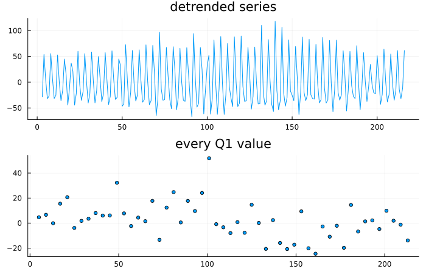
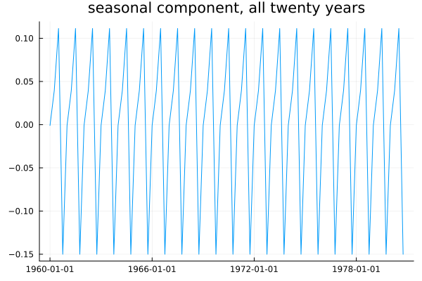
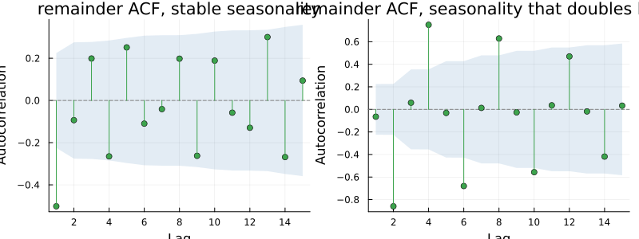

Classical Decomposition
using TSAnalytics, Plots
d = dataset("aus_production")
plot(d.Beer; title="Australian quarterly beer production", legend=false)
Chapter 13 named the three components a series is made of. This chapter is the oldest working method for actually extracting them, still the one most people meet first, and it uses nothing that has not already been built — a moving average from Chapter 4, and an average of averages. The method predates computers, which is worth saying plainly, because it explains both its simplicity and its limitations. It was designed to be carried out by hand.
Extract the trend
r = classical_decompose(d.Beer, 4)
plot(d.Beer; label="observed", alpha=0.5)
plot!(r.trend; label="trend (centred moving average)", linewidth=2)
A moving average whose window equals the seasonal period averages exactly one full cycle at every point, so the seasonal swing cancels inside the average and what remains is trend-cycle. For quarterly data that means a four-term average — and Chapter 4's even-order problem arrives immediately, because a four-term average has no middle observation to sit on. Recentring it with a further pass, the 2×4 filter, is exactly the fix Chapter 4 built, and this is where that oddly specific filter finally earns its keep.
println("total points: ", length(d.Beer))
println("trend NaNs: ", count(isnan, r.trend))
plot(r.trend[1:15]; title="the trend estimate, first 15 quarters", marker=:circle, legend=false)
Two observations at each end have no trend estimate at all, and the chart shows the gap directly rather than quietly starting the line later than the data does. For this quarterly series that is four observations lost out of 218 — a tolerable cost. For monthly data the same logic loses twelve, and on a short monthly series that is a real price to pay. The method is silent about precisely the most recent observations, which are the ones anyone trying to forecast the series actually cares about most.
Extract the seasonality
Detrend the series, then average what is left, quarter by quarter, across every year.
detrended = d.Beer .- r.trend
p1 = plot(detrended; title="detrended series", legend=false)
q1_idx = filter(i -> !isnan(detrended[i]), 1:4:length(d.Beer))
p2 = scatter(q1_idx, detrended[q1_idx]; title="every Q1 value", legend=false, markersize=3)
plot(p1, p2; layout=(2,1), size=(700,450))
This is the step where the method makes its defining assumption. Collecting every Q1 value across every year and averaging them produces a single number standing for "what the first quarter does." The average is stable and trivial to compute by hand, and it says the first quarter behaves the same way every single year.
jj = dataset("jj")
logy = log.(jj.value)
rj = classical_decompose(logy, 4)
println("figure: ", round.(rj.figure, digits=6))
println("year 1: ", round.(rj.seasonal[1:4], digits=6))
println("year 20: ", round.(rj.seasonal[(end-3):end], digits=6))
println("identical? ", rj.seasonal[1:4] == rj.seasonal[(end-3):end])figure: [-0.000956, 0.039625, 0.111383, -0.150052]
year 1: [-0.000956, 0.039625, 0.111383, -0.150052]
year 20: [-0.000956, 0.039625, 0.111383, -0.150052]
identical? trueplot(jj.date, rj.seasonal; title="seasonal component, all twenty years", legend=false)
A perfectly repeating sawtooth, and checking directly rather than eyeballing it: the four seasonal figures for year one and year twenty of jj are not merely close. They are bit-identical, confirmed with ==, because the method computes one number per quarter and repeats it for the life of the series. Johnson & Johnson's fourth quarter in 1960 and in 1980 are assigned the exact same seasonal effect by construction. Is that plausible — through two decades of a changing product mix and distribution network, is the fourth quarter's effect on earnings really unchanged? Almost certainly not. The method cannot represent a seasonal pattern that evolves, so as a matter of construction, it does not.
Where it breaks
using Random
Random.seed!(3)
n = 80
t = 1:n
base = 50 .+ 0.3 .* t .+ 10 .* sin.(2π .* t ./ 4) .+ randn(n) .* 2
contaminated = copy(base)
contaminated[40] += 60.0
r_clean = classical_decompose(base, 4)
r_contam = classical_decompose(contaminated, 4)
println("figure, no outlier: ", round.(r_clean.figure, digits=2))
println("figure, with one outlier: ", round.(r_contam.figure, digits=2))figure, no outlier: [10.19, 0.27, -10.68, 0.22]
figure, with one outlier: [9.4, -0.52, -11.47, 2.59]One large outlier, injected at a single Q4, shifts the Q4 seasonal figure itself — from 0.22 to 2.59 on this constructed series — because the figure is an average across years that includes it. A single strike, a flood, or one data-entry error propagates into the seasonal estimate for its own quarter in every year of the series, not just the year it happened. There is no mechanism in the method to downweight it.
Random.seed!(5)
amp = [i <= 40 ? 5.0 : 15.0 for i in t]
changing = 50 .+ 0.2 .* t .+ amp .* sin.(2π .* t ./ 4) .+ randn(n)
r_change = classical_decompose(changing, 4)
stable = 50 .+ 0.2 .* t .+ 8.0 .* sin.(2π .* t ./ 4) .+ randn(n) .* 3
r_stable = classical_decompose(stable, 4)
p1 = plot(acf(filter(!isnan, r_stable.resid), 1:15); title="remainder ACF, stable seasonality")
p2 = plot(acf(filter(!isnan, r_change.resid), 1:15); title="remainder ACF, seasonality that doubles halfway")
plot(p1, p2; layout=(1,2), size=(800,300))
lb_stable = ljungbox_test(filter(!isnan, r_stable.resid), 10)
lb_change = ljungbox_test(filter(!isnan, r_change.resid), 10)
println("stable remainder, Ljung-Box p: ", lb_stable.pvalue)
println("changing remainder, Ljung-Box p: ", lb_change.pvalue)stable remainder, Ljung-Box p: 4.570340920047147e-7
changing remainder, Ljung-Box p: 3.9278122825909125e-39A single fixed seasonal figure fitted to a series whose seasonal amplitude genuinely doubles partway through ends up too small for the first half and too large for the second, and that mismatch lands in the remainder as a systematic pattern rather than as noise — checking directly, the changing-seasonality remainder fails Ljung-Box by dozens of orders of magnitude more decisively than the stable case does. A remainder with real leftover structure is the decomposition itself telling you that one of its assumptions was violated — Chapter 13's diagnostic idea doing genuine work here, not just illustrating a point in the abstract.
Why it survives
For all of that, classical decomposition is fast, needs no parameter beyond the seasonal period itself, produces a result anyone could reconstruct by hand from the raw numbers, and is entirely transparent about what it did at every step. For a series with a genuinely stable seasonal pattern and no serious outliers, it gives essentially the same answer as anything more sophisticated — Chapter 13's comparison against STL on jj put the gap at about 0.024 on the log scale, small enough that it rarely changes a practical conclusion. It is also what "seasonally adjusted" meant for most of the twentieth century, and understanding it is necessary for reading any older material that uses the phrase.
The case against it is narrow and specific, not a wholesale dismissal: a fixed seasonal pattern, no defence against outliers, and missing estimates at both ends. Every one of those three complaints is fixable, and fixing all three with a single underlying idea, rather than three separate patches, is Chapter 15's subject.
Indian retail and industrial series have seasonal patterns that have genuinely changed shape over the past two decades — e-commerce has shifted festival buying earlier in the calendar, and the 2017 introduction of GST altered the timing of within-year inventory movements. A method that forces one fixed seasonal pattern across the whole period fits the average of two genuinely different regimes and matches neither one well. For a long Indian series, evolving seasonality is not the exceptional case worth a footnote — it is closer to the normal situation.
Where this leaves you
Three specific complaints, all really about rigidity: one fixed seasonal shape, no robustness to outliers, no estimate at either end. A method that let the seasonal pattern evolve, downweighted points it could not explain, and estimated all the way to both endpoints would answer all three at once. That method exists, and it is Chapter 15.